机器学习-代价敏感学习
代价敏感学习
Background
传统学习中，我们的目标通常是错误率最低，这默认了不同错误分类的代价是一样的，但实际上很多情况下把positive判断为negative跟把把negative判断为positive的代价是不一样的。也就是说：
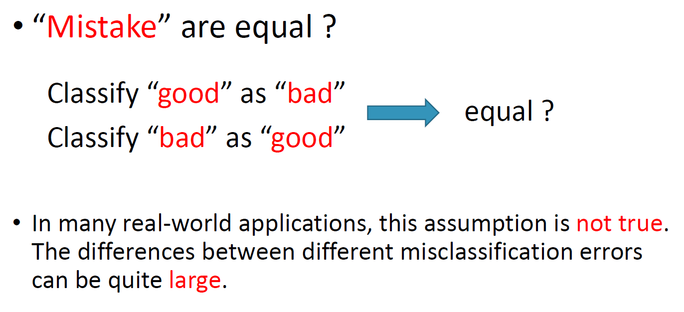如果在学习时考虑错误分类的代价，那么我们就可以称之为是代价敏感学习。我们最终的目标也变成最小化总代价。
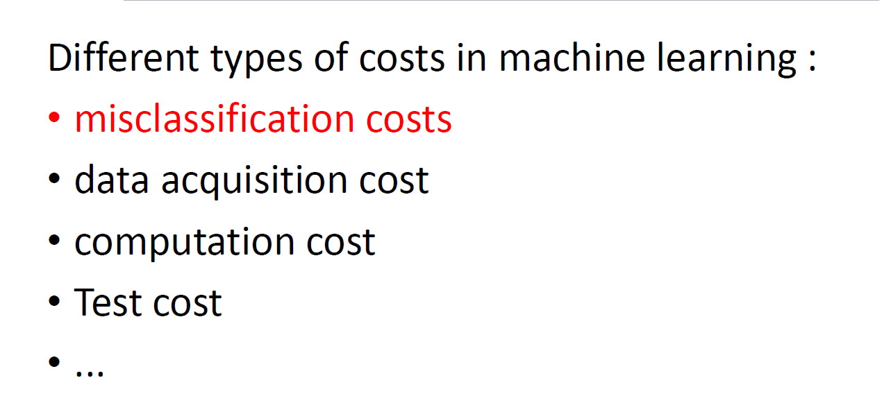对于 K分类问题，我们有类似于如下的 代价矩阵， 指的是将一个实际上属于 的样本分类为 所带来的代价。
Basis of Cost-sensitive Learning
以二分类问题为例，我们有如下的代价矩阵，其中 是我们需要考虑的值。
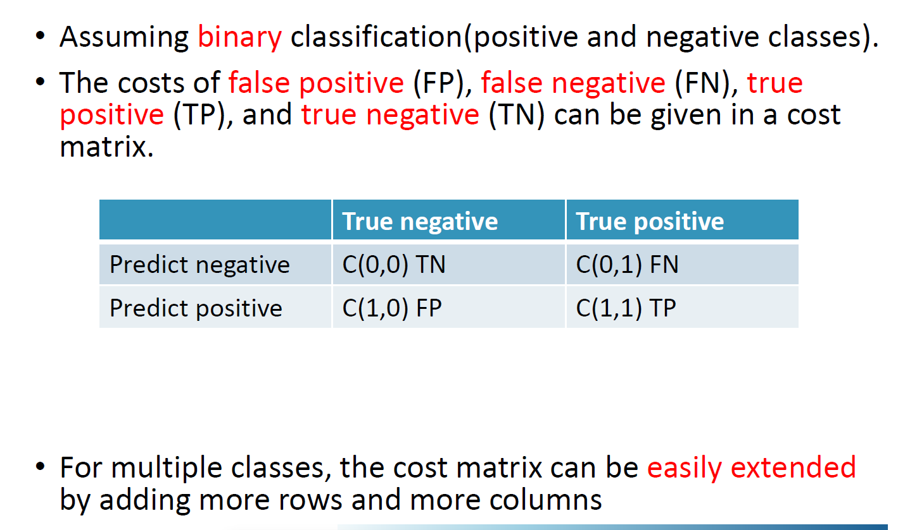分类器将真实为 的实例误分类为 所带来的代价是：
其中 是将实例分类为 的概率估计（概率函数值），以二分类为例。
如果 则认为 为negative（0）。
样例
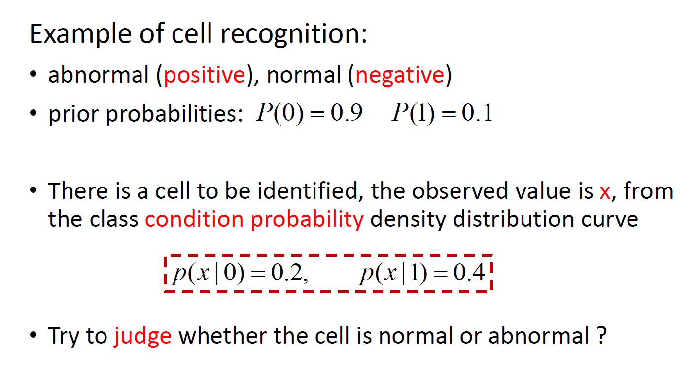 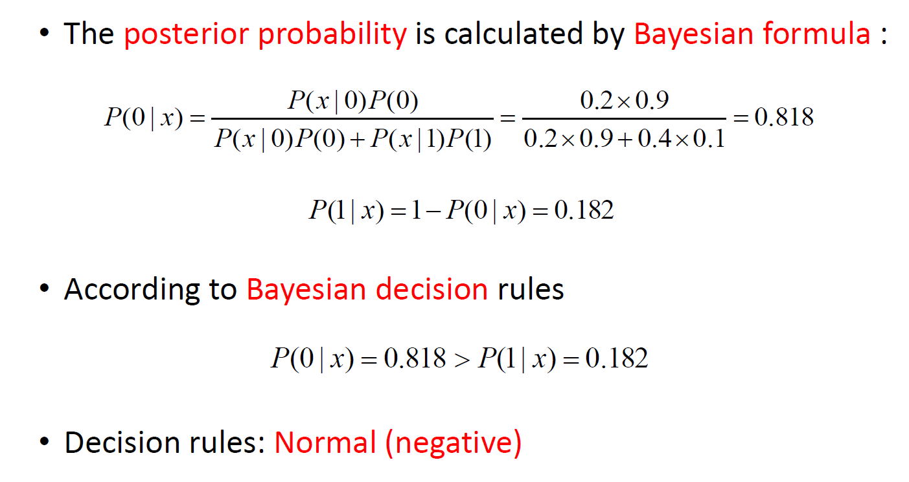 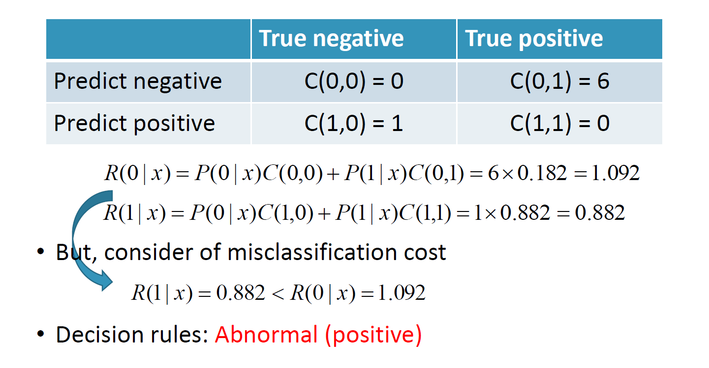
Cost sensitive Learning Methods
- Direct methods： introduce and utilize mis-classification costs into the learning algorithms
- 也就是说我们关注于如何直接构造一个代价敏感的学习模型，对不同的分类器模型研究者们提出了不同的解决办法
- Meta learning： method can be regarded as a middle-ware component that pre-processes the training data , or post processes the output , from the cost insensitive learning algorithms, and it can further be categorized into thresholding and sampling
- 元学习方法通过对训练数据进行预处理或对输出进行后处理，如抽样或阈值分割，来构建对成本敏感的分类器。元学习方法是有用的，因为它们可以将任何不敏感成本的算法转换为敏感成本的算法。
Direct methods
例如，代价敏感的SVM
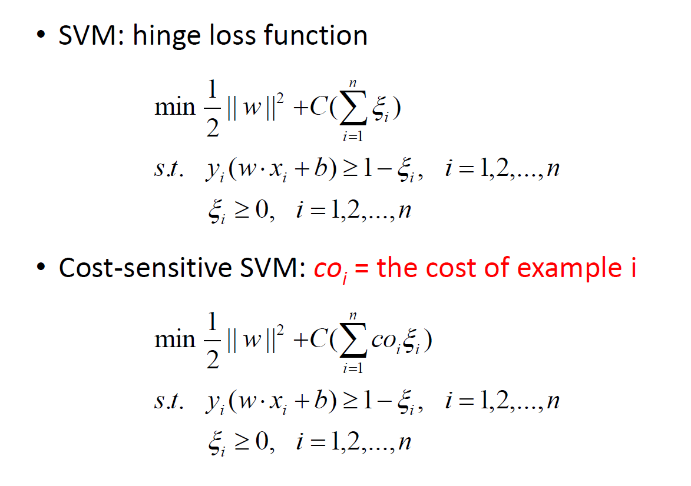Cost-Sensitive Meta Learning
Thresholding : change the output threshold toward inexpensive classes such that examples with higher costs become harder to be misclassified.
Sampling : modifies the class distribution of the training data, and then applies cost insensitive classifiers on the sampled data directly.
Thresholding
假设 ，如果 ，则将 归为 类，我们的目的是找到最佳的阈值
同样的，依然有：
对于我们的二分类问题，如果我们想将 分类为正例，即需要 ，即：
也即：
而假设 （分类正取当然不会有代价）。那么上式也即：
又： ，如果 ，我们就将 判断为正例（ 为阈值）。我们要找到这个阈值，只需要将上式取等号，令 ，则：
这样我们就可以得到我们所要寻找的阈值 ：
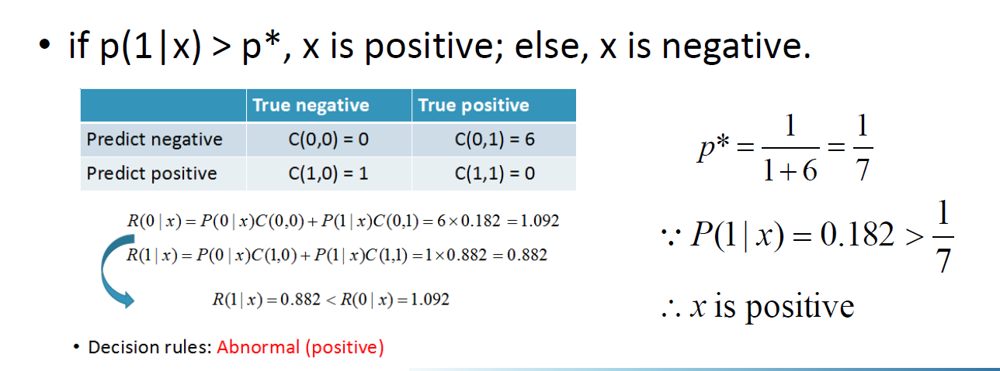
Empirical Thresholding
上面求得的阈值可能并不是最佳的，Empirical Thresholding 使用交叉验证从训练实例中搜索最佳概率作为阈值
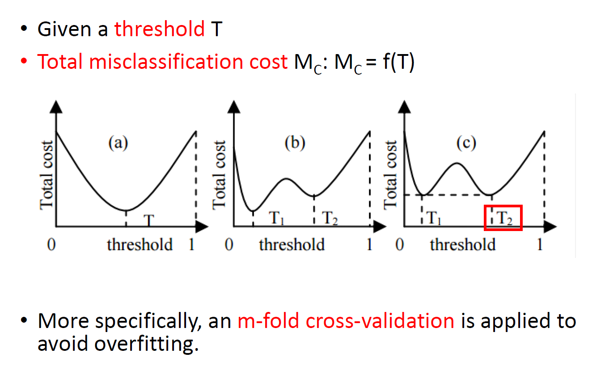Sampling
基于代价的
欠采样：减少数据集中代价小的类
过采样：增加数据集中代价大的类（采样不独立且容易过拟合）
基于权重的
根据错误分类的代价为每个实例分配一个标准化的权重。
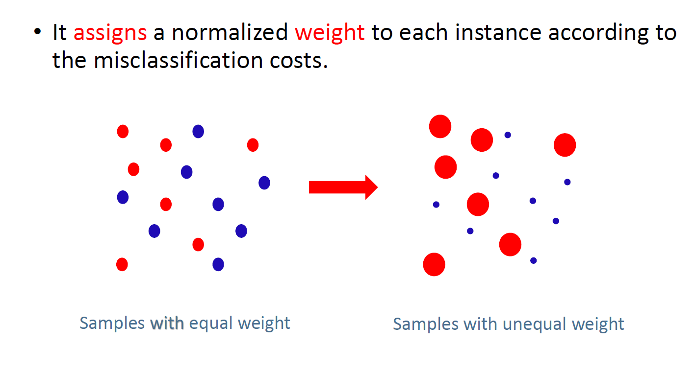成本敏感的树归纳是一种机器学习技术，用于训练决策树时考虑到不同类别的分类错误带来的成本。
在成本敏感的树归纳中，每个实例被赋予一个权重，反映了其在学习过程中的重要性。实例的权重是根据不同类别的分类错误成本和训练集中类别的概率分布来确定的。基本思想是增加属于成本更高的类别的实例的权重，这样算法在树归纳过程中会更加关注这些实例。这是通过修改质量测量的计算方式来实现的，即在计算信息增益或其他测量之前，将每个实例的权重乘以质量测量。
通过使用成本敏感的树归纳，可以训练决策树以最小化预期的分类错误成本，而不仅仅是错误率。这可以在分类错误成本不对称或不平衡的领域中产生更准确和有用的树。
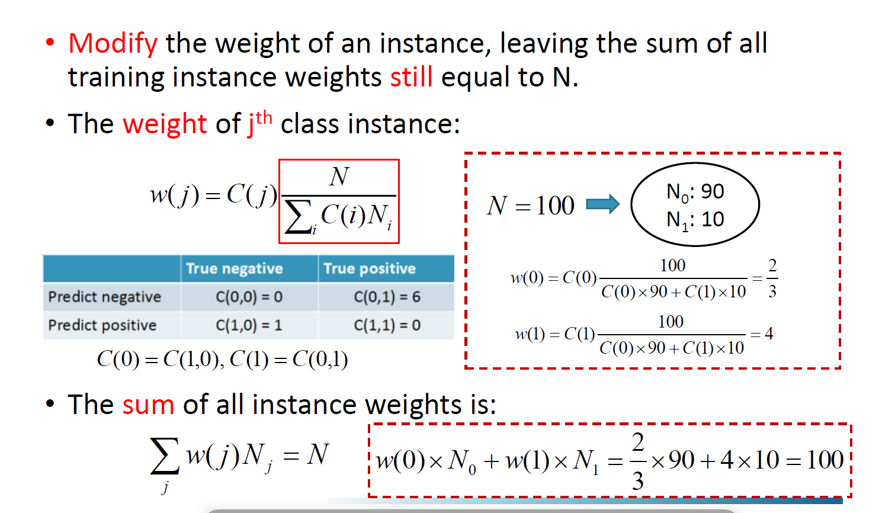
参考
https://zhuanlan.zhihu.com/p/134089340
https://github.com/Vay-keen/Machine-learning-learning-notes
https://github.com/familyld/Machine_Learning
https://zhuanlan.zhihu.com/p/25994179
https://leovan.me/cn/2018/12/ensemble-learning/
https://easyai.tech/ai-definition/ensemble-learning/
https://zhuanlan.zhihu.com/p/72415675
https://www.zhihu.com/question/63492375
https://www.zhihu.com/question/27068705
https://www.zhihu.com/question/19725590/answer/241988854
https://tangshusen.me/2018/10/27/SVM/
https://www.joinquant.com/view/community/detail/a98b7021e7391c62f6369207242700b2
https://zhuanlan.zhihu.com/p/79531731
https://blog.csdn.net/zc02051126/article/details/49618633
https://zhuanlan.zhihu.com/p/127022333
https://0809zheng.github.io/2020/03/30/ridge.html
https://www.cnblogs.com/wuliytTaotao/p/10837533.html
https://link.springer.com/referenceworkentry/10.1007/978-1-4899-7687-1_910#Sec13186
http://palm.seu.edu.cn/zhangml/files/mla11-mll.pdf
https://blog.csdn.net/zwqjoy/article/details/80431496
https://ryuchen.club/posts/0x000034/ (推荐）
https://zhuanlan.zhihu.com/p/78798251
https://zhuanlan.zhihu.com/p/622244758
https://www.biaodianfu.com/hierarchical-clustering.html
https://zhuanlan.zhihu.com/p/411533418
https://zhuanlan.zhihu.com/p/33196506
https://www.cnblogs.com/wry789/p/13125658.html
https://blog.csdn.net/qq_41485273/article/details/113178117
https://www.jianshu.com/p/7d4323c28716
http://lunarnai.cn/2019/01/02/watermelon-chap-13/
https://zhuanlan.zhihu.com/p/411533418
https://www.huaxiaozhuan.com/统计学习/chapters/12_semi_supervised.html
https://blog.csdn.net/tyh70537/article/details/80244490
https://zhuanlan.zhihu.com/p/37747650
https://blog.csdn.net/qq_40722827/article/details/104515955
https://www.cnblogs.com/dyl222/p/11055756.html
https://www.zhihu.com/tardis/zm/art/392908965
https://blog.csdn.net/j123kaishichufa/article/details/7679682
https://www.cnblogs.com/heaad/archive/2011/01/02/1924088.html
https://www.cnblogs.com/stevenlk/p/6543628.html
等等